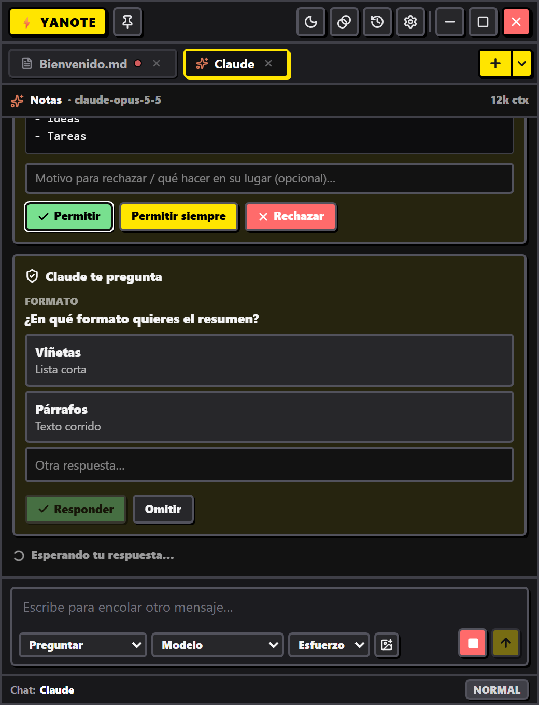

Siempre encima
Fija la ventana sobre las demás y ajusta su transparencia para leer lo que hay detrás.
yanote es un bloc de notas Markdown que flota sobre tus ventanas. Abre notas, terminales y chats con Claude Code en pestañas, sin salir de lo que estás haciendo.
Funciones
Diseñado como una ventana compacta que puedes dejar fijada en una esquina mientras trabajas.
Fija la ventana sobre las demás y ajusta su transparencia para leer lo que hay detrás.
Notas Markdown, PowerShell, CMD y chats con Claude, todo en pestañas que puedes fijar y renombrar.
Títulos, tablas, listas de tareas y código con formato visual, o cambia al texto Markdown puro.
Escucha tu nota, una selección o la última respuesta de Claude mientras haces otra cosa.
Abre PowerShell o CMD en la carpeta de la nota activa. Pega imágenes con Ctrl+V.
Claude Code como un chat de verdad, con permisos, tareas y diffs visibles.
Un tema nocturno pensado para trabajar de noche sin perder el contraste.
Cuando sale una versión nueva te avisa; aceptas y se instala en segundos.
Claude Code, sin terminal
Elige Chat con Claude en el menú de nueva pestaña y trabaja con Claude Code sobre la carpeta de tus notas.
/, imágenes pegadas y modo planificación
Necesitas Claude Code instalado y con la sesión iniciada:
ejecuta claude una vez en una terminal. yanote usa tu propia cuenta.

El instalador es la opción recomendada: se actualiza automáticamente.
Instalación
yanote-Setup.exe.